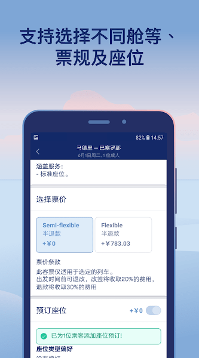

Omio 值不值得掏钱？把出行聚合平台的付费账算明白
从票价档位到 Omio Flex，把这个欧洲出行聚合应用的每一分钱拆解清楚——三类使用强度的人，各自该怎么决策。
先抛一个实际的问题
去年冬天我计划去里昂过周末，搜了三家平台又切回铁路官网折腾了两个小时——最后还是在 Omio 上买的大巴票，因为它把始发地机场接驳那段和市区直达大巴拼成了一条线，总价比我自己拼还便宜三欧元。付完款之后我盯着页面顶部那个「加 Omio Flex 只要 1.8 欧元」的勾选项犹豫了大概十秒，最终没勾。回程因为天气原因大巴取消，那段路的票规是不可退，损失了十二欧元。
这十二欧元成了我这篇账的由头。Omio官网 值不值得掏钱？不是问「它好不好用」——好用是另一个维度——而是问：你应该为它花多少钱、在什么情况下花、花了换回来什么。
定价拆解：两层付费逻辑
Omio 的付费不是单一的「买会员」模式，而是两层叠加：票本身的档位和额外的 Omio Flex。这两层经常被混为一谈，但决策时得分开看。
第一层：票价档位——这是基础设施
任何一张票在应用里都至少有三档可选：促销档（最便宜，基本不可退）、半弹性档（可退但收比例费用，常见是退票收 30%）、全弹性档（可退折损最小）。同一班火车，三档之间的差价能从十几块到七八十块不等。
大部分用户默认选促销档——这是对的，大部分时候。问题出在：促销档的不可退是硬伤，行程稍微变卦就是全损。半弹性档收 30% 的退票费，听起来不高，但如果你在出发前一周取消，那 30% 是白烧的。全弹性档最贵，比促销档高出一截，相当于提前为「我可能取消」买了保险。

第二层：Omio Flex——这才是它的付费钩子
Flex 不是档位，是叠加在任何一档票上的可选保障。加了 Flex 之后，出发前取消可以拿回接近全额的票价，不受原票档位限制。关键就在于：促销档 + Flex，通常比半弹性档或全弹性档便宜得多，同时还保留了可退的灵活性。
这是 Omio 定价里最鸡贼也最聪明的设计——它用 Flex 把「便宜档不能退」的死穴给填上了，而且填得比你直接买高档位还划算。Flex 的价格一般是票价的 5% 到 15%，视路线和时间窗口而定。我那次十二欧元损失的票，加 Flex 只要 1.8 欧元，换回来的是 weather cancellation 全额退款。
还有什么隐性费用
平台本身的服务费通常已经包含在票价里，不会额外收取。但有两个隐蔽支出值得注意：外币结算手续费——如果你用人民币之外的币种结算，发卡行可能收取跨境转换费；以及联程票的退改复杂度——多模式拼出来的行程，两段票退改要分别处理，一段改了另一段可能衔接不上，这点在买 Flex 之前就得想清楚。
算账：三类人各算一遍
定价拆清楚了，现在对号入座。我把 Omio 的用户按一年出行次数 + 每次行程的确定性分成三类，每类都算一笔时间账和风险账。
轻度用户：一年一两次短途，行程定死
典型场景：一年一次周末出游、探亲、商务出差，出发日期和返程日期提前一两个月就锁死，大概率不会变。
免费版（促销档）够用吗？ 够用。你先从官方下载装好应用，在 Omio 上搜、比、订，用支付宝付款，这些核心功能全是免费的。

促销档的不可退对你来说不是问题——你行程定死的概率远大于它变卦的概率。
要不要加 Flex？ 不用。1.8 欧元换 12 欧元的退款权，只有行程不确定才值。如果你已经把酒店订死、假请了、机票联程了，取消的概率极低，那 Flex 就是纯支出。
这笔账的结论：你为 Omio 花的钱 = 促销档票价本身，零额外付费。 它的价值是帮你省了两小时跨平台比价的时间，这值不值取决于你的时间单价——但这个价值不需要你额外付钱。
主力用户：一年三四次跨城，行程半确定
典型场景：半年内要出差两三次、或者带着家人走一条跨国自由行路线，出发时间大概有谱但不敢百分百保证，可能因为会议改期、天气、家人状态调整行程。
免费版有什么问题？ 你每次选促销档都在赌——赌行程不变。赌赢了省钱，赌输了损失一张票钱。三四次下来，赌输一次的概率已经不小了。而且你每次下单前都要纠结十分钟：「到底选便宜的还是选可退的？」这个心理负担也是隐性成本。
要不要加 Flex？ 这是你的甜点区。拿我之前那趟里昂行程举例：票价 15 欧元（促销档），加 Flex 1.8 欧元，总共 16.8 欧元。对比半弹性档 22 欧元——Flex 方案省了 5.2 欧元，同时保留了几乎全额退款的权利。按这个比例算，每趟加 Flex 比买半弹性档省 20% 到 40%，还多了 weather cancellation 的保障。
时间账呢？ Omio 帮你把火车、大巴、航班、轮渡放进同一次搜索，这本身就省了至少两个小时的比价时间。主力用户一年三四趟，就是六到十二小时——折算成你的时间单价，这笔账怎么算都划算，而且这个便利是免费的，不需要额外付费解锁。
这笔账的结论：每趟都值得加 Flex，这是你能拿到的「最便宜的可退保障」。 别买半弹性档和全弹性档——它们比促销档 + Flex 贵得多，保障还未必更好。
重度用户：频繁出差或长期旅居，行程随时变
典型场景：每周都有跨城交通、数字游民在欧洲不同国家间穿梭、需要随时调整出行计划。
免费版的局限在哪？ 重度用户的问题不是票价——是灵活性的天花板。即使你每趟都加 Flex，Flex 也只是 Omio 这一层的保障，它改变不了促销档本身的一些硬限制（比如有些促销档不能改日期，只能退了重买——具体限制可以翻Omio文档）。而且联程票的退改复杂度在你这里会被放大——每周一次出行，每个月都可能遇到一次联程票需要退改的情况，两段票分别处理的麻烦会累积。
有没有更贵的选项？ 全弹性档直接买。虽然比促销档 + Flex 贵，但它给你的是承运商级别的弹性——不仅能退，还能改日期、换班次，不需要退了重买、不需要重新比价。对于每周都要调整行程的人来说，全弹性档省下来的时间和心理负担，远超过它的溢价。
还有一个隐藏支出：多平台注册成本。重度用户如果不用 Omio，需要同时注册五六个当地交通承运商的官网——法国 SNCF、德国 DB、西班牙 Renfe、各个大巴运营商——每个都要绑卡、存地址、记密码。Omio 一个账号管所有，这个便利在你频繁出行时的价值会被指数级放大。
这笔账的结论：你大概率需要直接买全弹性档，或者每趟促销档都加 Flex + 接受联程退改的麻烦。 具体选哪个取决于你调整行程的频率——每月调整一次以上就全弹性，否则促销档 + Flex 足够。
替代方案：不付这笔钱还有什么路
算账不能只看付钱的选项，还得看不付钱的代价。
直购承运商官网
这是最常见的替代方案——去 SNCF、DB、Renfe 这些承运商的官网直接买。好处是票价可能更便宜（聚合平台有时候会有微幅加价）、退改流程少一层中间商、到账更快。坏处是比价成本爆炸——你得自己开五六张标签页、自己比价格和耗时、自己判断哪个时间更合适。还有那些非英语界面，对于中文用户来说是实际障碍。
分开刷多个聚合平台
不只用 Omio，同时查 Trainline、Busbud、各个当地平台。好处是可能偶尔挖到 Omio 没收录的折扣班次。坏处是信息噪音翻倍——每个平台的搜索逻辑和排序都不一样，你得在脑子里把五六套结果合并比对一遍。而且每个平台都要注册、都要绑卡。
硬扛取消费
不买 Flex、不买弹性档，行程变了就认倒霉。好处是当下省钱。坏处是长期均值偏高——按概率算，一年三四趟的主力用户，取消概率大概在 10% 到 20%，硬扛意味着每五趟就要烧掉一趟的钱。重度用户的话，这个均值会更高。
用多模式联程的替代路径
Omio 能把大巴 + 火车拼成一条联程，但你自己也可以手动拼——先查大巴到枢纽，再查枢纽到目的地的火车。好处是有时候能找到促销档的联程组合。坏处是联程退改的麻烦你全兜着——两段票不关联，前段取消了后段你得自己想办法，Omio 至少还给你一个统一的退款入口。
最后给一个可执行的决策表
我把上面的账浓缩成一张三行表，你对照自己的情况选就行：
| 你是 | 每趟怎么选 | 为什么 |
|---|---|---|
| 轻度用户（一年一两次，行程定死） | 促销档，不加 Flex | 取消概率太低，Flex 纯浪费；Omio 的比价便利免费拿 |
| 主力用户（一年三四次，行程半确定） | 促销档 + Flex | 比半弹性档省 20-40%，还多 weather 保障；这是 Omio 定价里性价比最高的组合 |
| 重度用户（频繁出行，行程随时变） | 全弹性档，或促销档 + Flex | 调整频率高于每月一次就直接全弹性；否则 Flex 足够 |
还有一个永远有效的测试：下一次下单时，把促销档、促销档 + Flex、半弹性档的价格同时放在面前，算一下 Flex 收了你多少钱、半弹性档比 Flex 方案贵了多少——数字会自己说话。我那次算完之后，后面每次里昂出行都默认加 Flex 了，那 1.8 欧元换回来的是「如果下雪我也不会慌」这七个字的确定性。
Omio 的付费逻辑说到底就是在卖一样东西：把不确定性变成可量化的成本。你愿不愿意为这份确定性掏钱，取决于你面对不确定性的频率和承受力。买对了，每一分钱都在帮你省更贵的东西——时间、麻烦、意外损失。买错了，就是纯支出。关于 Omio 付费决策的这套思路和参考资料，我在三个公开仓库都做了同步——GitHub 是主维护仓库，Gitee 方便国内直接拉取，GitCode 留个额外备份，不怕哪一路挂了。